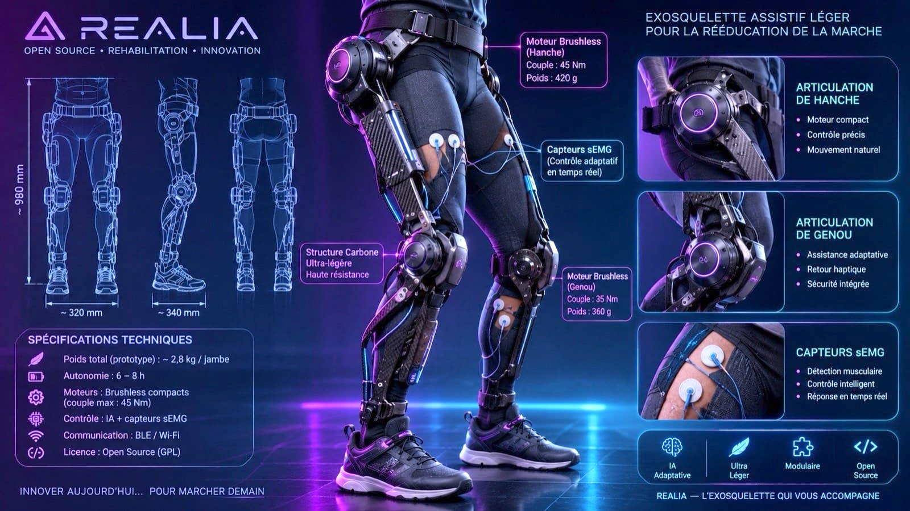
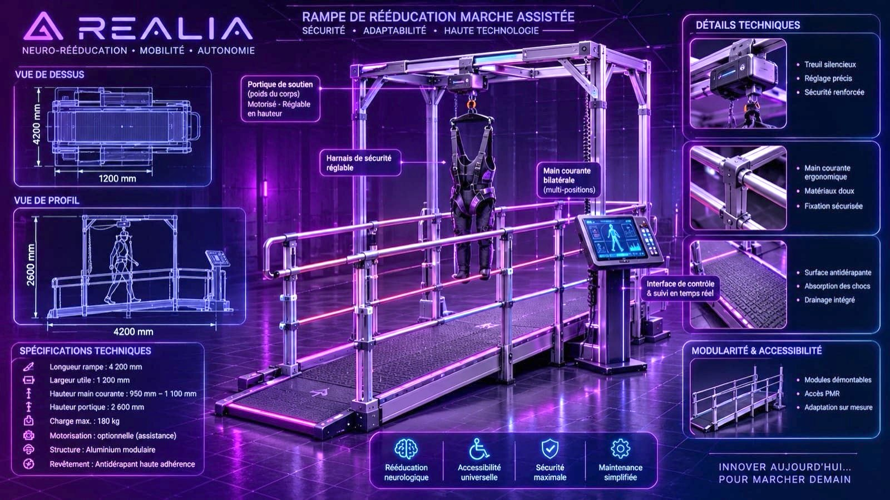

Pourquoi simuler d'abord
La cinématique de hanche et de genou dépend de la morphologie. Tester ces réglages sur un banc virtuel évite d'usiner dix pièces fausses.
Régler un exosquelette sur une personne, c'est usiner une pièce par essai. Dans un simulateur, c'est changer un nombre. Voilà pourquoi le jumeau numérique passe avant la première vis.
La cinématique de hanche et de genou dépend de la morphologie. Tester ces réglages sur un banc virtuel évite d'usiner dix pièces fausses.
MuJoCo tourne sur le poste de terrain et donne des contacts crédibles. Isaac Sim apporte le rendu et la vision, quand le GPU suit.
Modèles, paramètres de séance et courbes de latence : de quoi refaire la manipulation ailleurs, y compris quand ça rate.
Étape 1 — Le flux : ondes EEG et sEMG, ce que les capteurs lisent avant toute décision.
Glisse à la souris ou au doigt pour tourner la vue. Aucune donnée réelle : c'est un modèle, pas une séance.

